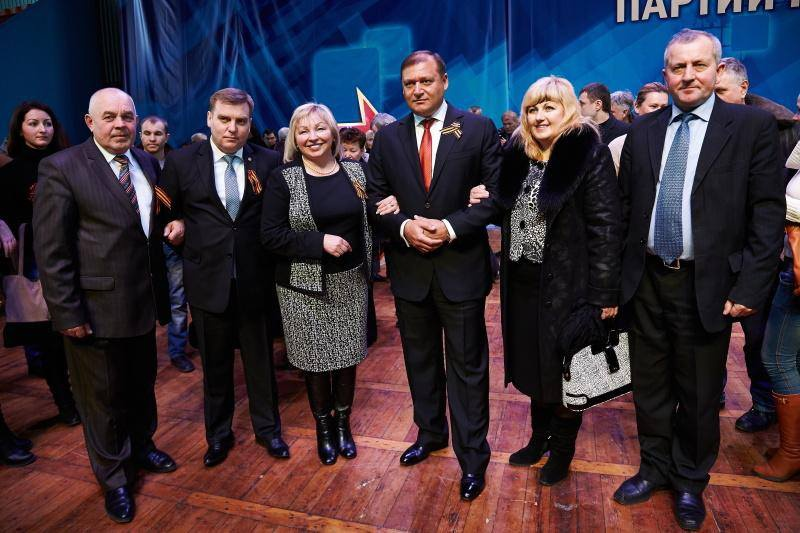

Дивлячись по телевізору організований у Харкові україноненависниками Добкіним і Кернерсом проросійський шабаш партії регіонів, метою якого було посіяти ненависть до українців, що вийшли на Євромайдани відстоювати свою честь і гідність, не здивувася, побачивши поруч з Добкіним сімейство Хоптян, які внаслідок виявлення до них недовір’я жителів Тернопілля, були усунуті із своїх посад і змушені повернутись туди, звідки приїхали.

Все це відбувалось мирно, чесно і законно. Їхній присутності на цьому зборищі можна не дивуватись. Вони чужі у нашому краї люди, десантники межигірського
диктатора Януковича, що були закинуті у наш галицький край з метою перетворення нас, галичан, у покірних слуг донецької злодійської мафії, не здатних до
свідомого опору злочинній владі і боротьби за українську Україну.
Їм можна не дуже дивуватись, бо, будучи вихованими на засадах рабського плазування перед московським “старшим братом”, одержавши закалку в ленінському комсомолі, ставши вірними слугами кремлівських комуністичних деспотів, вони не захотіли за роки української незалежності переформатувати свою свідомість і стати повноцінними українцями. Для характеристики таких людей українці влучно використовували приказку: “Чим баняк накипів, тим буде смердіти”.
Найбільш здивувало те, що поруч з Н. Хоптян , яка, виступаючи, обзивала нас нечистю і закликала харків’ян приїхати на Тернопільщину привести нас до їхнього регіонально- донєцкого порядку, були свої, місцеві ренегати і лакузи, уродженці наших багатостраждальних патріотичних надзбручанських сіл: з с.Сороки — Петро Марків (нач-к райсільгоспуправління), з с.Шидловець — Ігор Процків (говн. бух-р райлікарні), з с.Вільхівчика — Марія Гайдук (заст. голови РДА), з с.Яблунова — Руслан Мостовий (нач-к департ. охорони здоров’я ОДА) та інші не всім відомі манкурти.
При всьому тому, що маємо на 23 році незалежності України, ніяк не можу зрозуміти ганебний поступок вище названих людей, адже народились і виросли вони серед людей, яким були чужі переконання московських окупантів, комуністичних вампірів і сьогоднішніх злодіїв із партії регіонів.
Думаю і ніяк не можу догадатись, яким мотивами керувались названі “патріоти”, відправляючись на з’їзд регіоналів у Харків. Що спунукало їх до вчинку, який граничить із зрадою свого народу, бо ж ідеї і прагнення донецької регіональної мафії не сумісні із бажаннями всіх чесних українців у розбудові справді української держави? Юдин гріш? Прагнення до ситого і розкішного життя? Брак національної свідомості і елементарного розсудку? Бажання втриматись на дарованих посадах? Чи все разом?
Невже у нікого із них не було ніскільки розуму, щоб зупинитись, не накликати на себе і свої сім’ї на довгі роки зневагу і ганьбу? Трудно повірити, що вони так скоро всмоктали у свої душі і характери ворожу азіатсько-бандитську ідеологію. Навіть найменш усвідомленній в ідеалах порядності людині відомо, що гроші, посади і титули, розкіш і навіть життя є тимчасовими явищами. Аксіомою є те, що зрадник ще за життя стає живим трупом. Спочатку — духовним, дальше — фізичним, що поки дійде до свого кінця, його каменують. Спочатку — власна совість, далі — чужі люди, ще дальше — власні потомки. Навіть сповідь перед Господом Богом не знімає і не змиває ганьби зради.
Історично знаємо багато прикладів про те, чим закінчувалось зрадництво для багатьох нам досить відомих постатей. Їх у нашій історії не мало, що за вірну службу ворогам поплатились від них своїм життям. Згадаю кількох, серед них імена найвідданіших партії Леніна-Сталіна малоросів-хохльонків — Юрія Коцюбинського, Віталія Примакова, що вбивали наших студентів під Крутами і разом з царським полковником Муравйовим знищили за тиждень п’ять тисяч киян. Також Петровського, Затонського, Скрипника, Хвильового та тисяч інших нерозумних українців, вбитих сталінськими опричниками-чекістами у 1937 — 1938 р.р. за вірну службу комуністичному диспотичному режимові. Знаємо, ворог належно оцінив їхні старання: після того, як стали йому непотрібні, викинув на смітник історії. Оцінюючи сьогоднішнє становище в Україні, не хочеться вірити, що правдою є те, що історія нічого не вчить.
При всьому сказаному вище беззаперечним є право кожного громадянина на вільне волевиявлення. Нажаль, не всі люди його використовують в інтересах свойого народу, а не власних егоїстично-самолюбивих. На Харківський шабаш регіоналів згадані вище “патріоти” їхали добре знаючи про все, що у той час відбувалось в Україні з кінця листопада 2013 р. до часу їхнього від’їзду у Харків. Вони все бачили, якщо не хотіли бачити, то чули, що твориться на Майданах України. Тільки тупа, позбавлена елементарного логічного мислення людина, своєрідний дегенарат і манкурт міг спокійно спостерігати за побиттям “Беркутом” до крові студентів і журналістів, те, як вбивали мирних людей, розбивали людям голови, ламали руки і ноги, знущались над голими на морозі. Як можна було після всього того баченого українцеві, якщо він українець, спокійно їхати на форум україножерів Добкіна і Кернеса, просити у них допомоги, щоб надіти на нас усмиряючу путінсько-януковичську сорочку. Більш цинічного поступку не можна було ні придумати, ні вчинити. Тому хай і не дивуються вищеназвані “патріоти”, що народ їхні прізвища надовго приб’є до ганебного стовба. Це про таких, як вони, знищений московським комуністичним режимом поет Василь Симоненко писав:
Ви байстрюки катів осатанілих.
Не забувайте, виродки, ніде:
Народ мій є!
В його гарячих жилах
Козацька кров пульсує і гуде!
Народ мій є!
Народ мій завжди буде.
Ніхто не перекреслить мій народ,
Пощезнуть всі перевертні-приблуди.
І орди завойовників заброд!
Богдан Савка, член національної спілки журналістів України
м. Копичинці
P.S.
За останні дні багато блудних синів вийшло із партії регіонів. Тим, хто цього ще не зробив, раджу опам’ятатися, ніколи не пізно це зробити.
http://zz.te.ua/bohdan-savka-kativ-osatanilyh-bajstryuky/